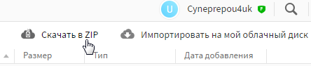
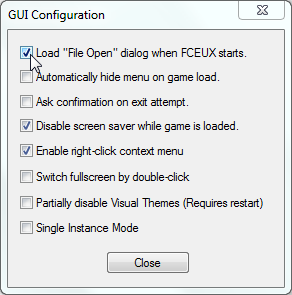
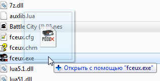
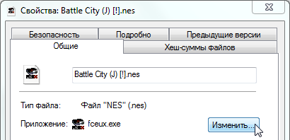

Содержание
Основной формат файла для игр - файлы с расширением .nes (Nintendo Entertainment System). Скачать ROM'ы свежей сборки GoodNES можно здесь. Распаковать архивы можно программой WinRar или 7-Zip.

GoodNES - сборка всех существующих ROM'ов игр NES, а также относительно старые хаки этих игр. У некоторых игр могут быть несколько официальных названий, зависящих от страны, для которой они разрабатывались. Иногда быстрее загуглить нужный ROM по имени, чем пытаться найти его в этой сборке, хотя в последнее время скачать отдельные ROM'ы из интернета стало сложнее.
Эмулятор также умеет открывать файлы .fds (Famicom Disk System), .nsf (NES Sound Format) и .unif (Universal NES Image Format).
Не все существующие игры поддерживаются эмулятором, но большинство. В основном это зависит от поддержки маппера в самом эмуляторе.
Есть несколько способов открыть игру.
Чтобы открыть игру, в эмуляторе выбери File -> Open и найди нужный файл в проводнике.
Эмулятор может открывать игры, запакованные в .zip архив.
Список последних открытых файлов будет находится в File -> Recent, можно открывать игры через этот список. Список обновляется после закрытия эмулятора.
Можно сделать так, чтобы окно открытия файла вызывалось автоматически после запуска эмулятора. Для этого выбери Config -> GUI и поставь самую первую галочку.

Окно GUI Configuration можно открыть, кликнув правой кнопкой на окне эмулятора и выбрав опцию Use Config.
Перетащи ROM на файл fceux.exe.

В свойствах любого файла .nes выбери fceux.exe как программу для открытия по умолчанию.

После сохранения настроек запусти файл .nes, и эмулятор откроется вместе с этой игрой.
Если изменить местоположение файла fceux.exe, потребуется заново